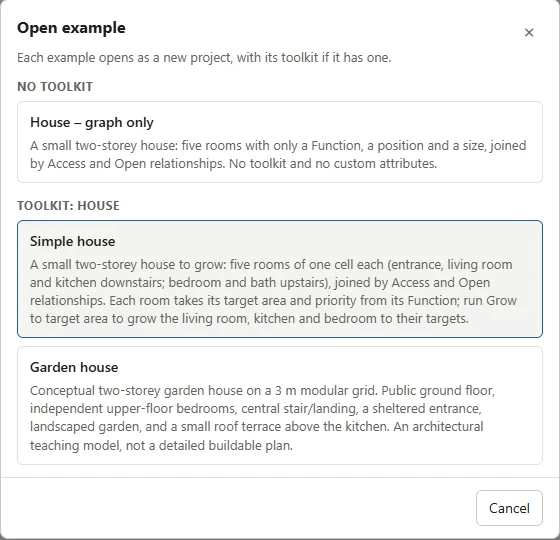

Page 7 of 12 · B. Make your toolkit
Make your toolkit with a coding agent
The agent (Codex, Claude Code or GitHub Copilot in Agent mode) writes your folder inside VS Code. You describe it, review every change, try it and push.
Your toolkit id: <toolkit-id> · changeYour toolkit id is not set on this page yet: or make it on page 6. Orange <toolkit-id> = replace with yours.
Before this page: Set up and Plan and claim. Agent out of quota? Continue with a chat on page 8.
01Checkpoint: page 6 done, on your branch You do this
Done page 6, including claiming your branch? Then continue here.
Checkpoint: page 6 done, on your branch You do this
Done page 6, including claiming your branch? Then continue here.
Open the course folder in VS Code (File › Open Recent) and look at the bottom left:

toolkit/<toolkit-id>, not main.It shows main
Go to your branch (no -c: it exists already):
git switch toolkit/<toolkit-id>
Not claimed yet? Do Plan › Claim it on GitHub first.
02Start your agent You do this
Open its panel in VS Code.
Start your agent You do this
Open its panel in VS Code.
- GitHub Copilot: the Chat view, set to Agent.
- Codex: the Codex panel (its icon in the sidebar).
- Claude Code: the Claude icon in VS Code.
Approve each action yourself. When the agent asks to run a command or change a file, read it first. Never choose “always allow” or auto-approve. Say no to:
- changes outside
toolkits/<toolkit-id>/, e.g. inlab/,package.jsonortoolkits/house/; - installing a package (
npm install something); git reset --hard,git clean,git checkout -- .: they wipe your work too.
How does the agent know the course's rules?
The course has told it: the agents read AGENTS.md (Claude Code through CLAUDE.md), which says to change only your folder, stay on your branch and never push for you. Agents can still make mistakes, so you review.
03Send your prompt You do this
The one page 6 built for you.
Send your prompt You do this
The one page 6 built for you.
Copy it from Plan › Your prompt (your plan filled in), or copy this one and fill the orange blanks in the agent's box:
Read lab/docs/TOOLKITS.md and lab/docs/ai-kit/toolkit/PROMPT.md in this repository, then create my toolkit following them exactly. Work only inside toolkits/<toolkit-id>/ on my branch toolkit/<toolkit-id>, run the checks, and commit only my folder. Do not push: I will push. Toolkit id: ___ My idea: ___ Functions (and their attributes): ___ Algorithms: ___ Example design: ___
Using Claude Code?
You can instead type /create-toolkit and answer its questions.
04Review what it changed The agent does this You review
It writes your folder, runs the checks and commits; you read the result.
Review what it changed The agent does this You review
It writes your folder, runs the checks and commits; you read the result.
The agent ends with a summary: your Functions, algorithms and designs, the checks, and a commit. Then check yourself:
git status
nothing to commit, working tree clean, or only files under toolkits/<toolkit-id>/.
Something outside your folder changed? Ask the agent: “Undo only the changes to these files outside my toolkit folder, file by file, with git restore, then show git status.” Never let it undo everything at once.
Read the files too
Open your folder in the VS Code explorer: each step has a comment in plain English. Ask the agent to explain any rule you cannot explain yourself.
05Try it in the app You do this
Run the app on your laptop with your toolkit.
Try it in the app You do this
Run the app on your laptop with your toolkit.
npm run dev
Then open http://localhost:5173/?toolkit=<toolkit-id> › Open example… › your toolkit's design. ?toolkit= tells the app which toolkit to start with.

The terminal is busy while the app runs. Open a second terminal with + for other commands; stop the app with Ctrl+C (also on a Mac).
My toolkit is not there, or something is disabled
- My toolkit is not in Open example…
- A Function or algorithm is disabled (the reason is in Project › Advanced)
- “localhost refused to connect”
06Improve it You ask The agent changes
In plain words, one change at a time.
Improve it You ask The agent changes
In plain words, one change at a time.
For example: “Make the Reading room blue”, “The seat count ignores the upper level: fix it”. Paste any error message in full. Try every algorithm on a design whose answer you know: agents can be wrong with confidence.
07Check and push You do this
You push, not the agent.
Check and push You do this
You push, not the agent.
npm run check:toolkit -- -t <toolkit-id>
You should see, at the end
PASSED: toolkit "hk-small-library" is ready.The last line is what counts. FAILED: … means: read the red message above it (Help).npm run typecheck
You should see
> spatial-graph-lab@0.1.0 typecheck > tsc --noEmit -p tsconfig.jsonand then the prompt again. No red
error lines means the code checks out.git status
nothing to commit, working tree clean (the agent committed your folder).
git push
toolkit/<toolkit-id> -> toolkit/<toolkit-id>.
PASSED, the push went through, and a green ✓ appears beside your latest commit on GitHub.